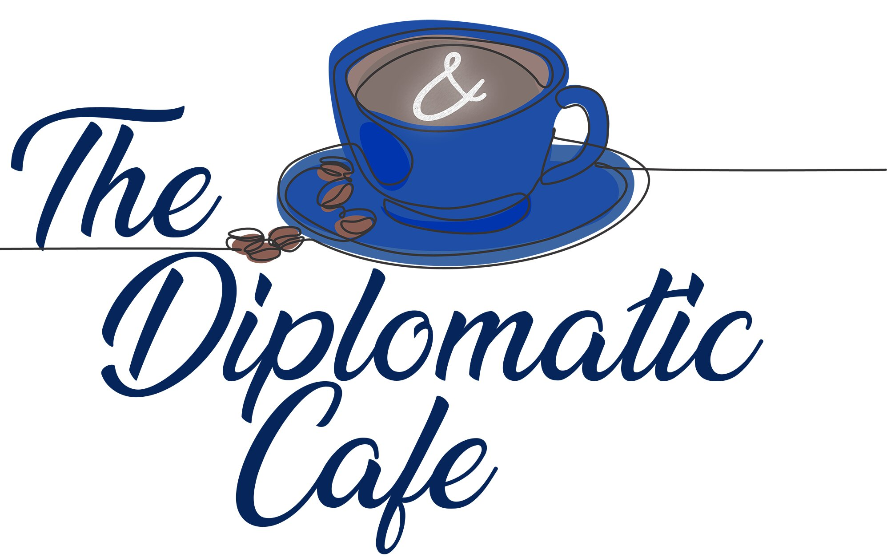
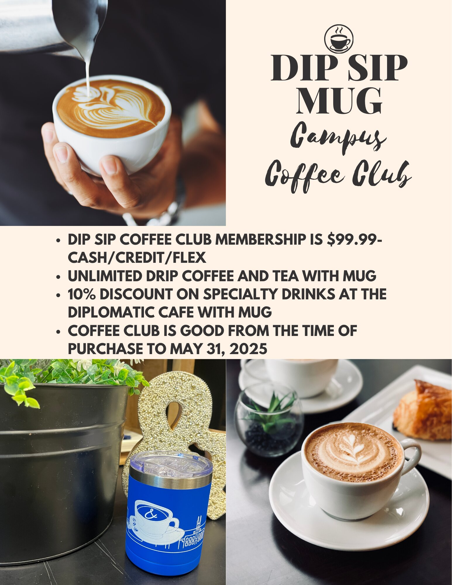
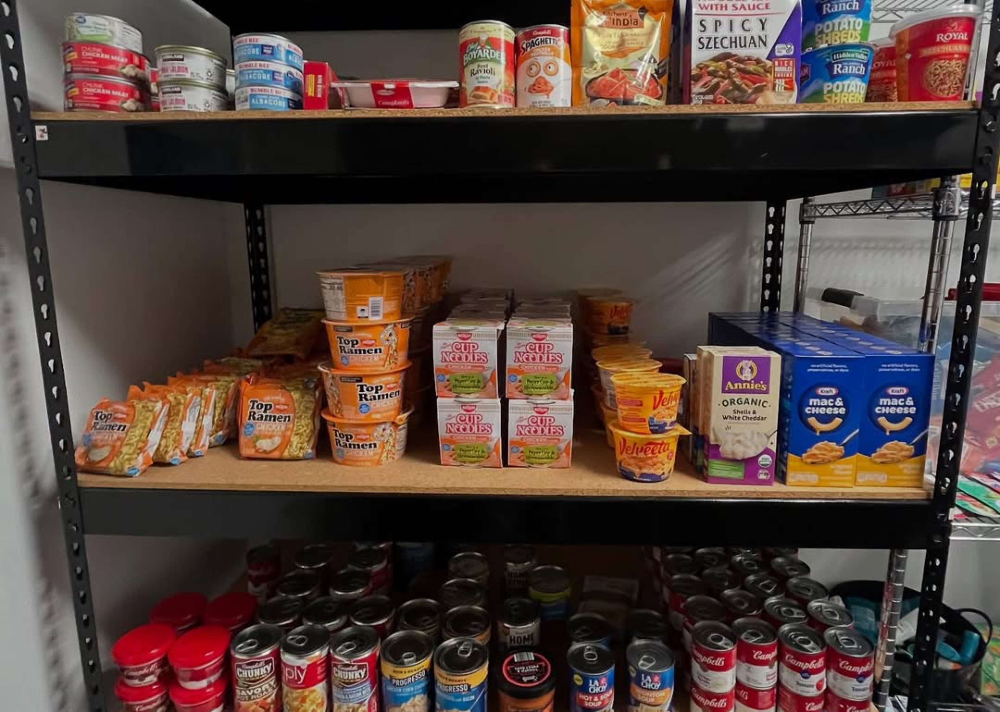
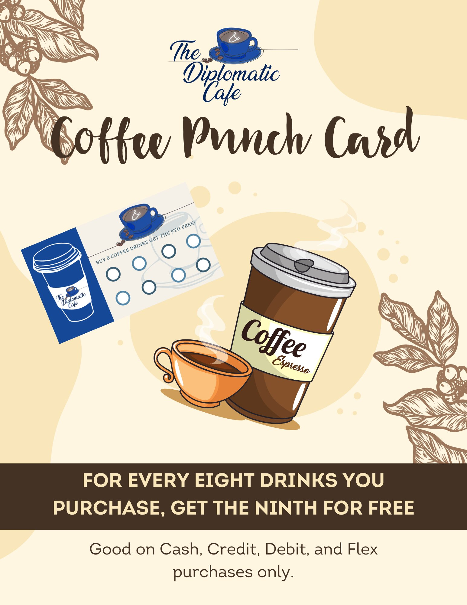
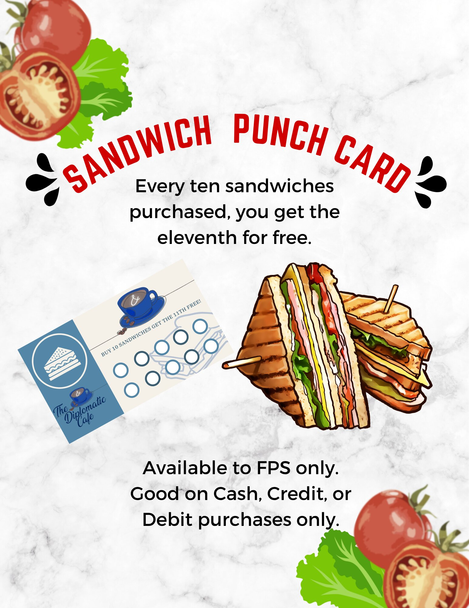
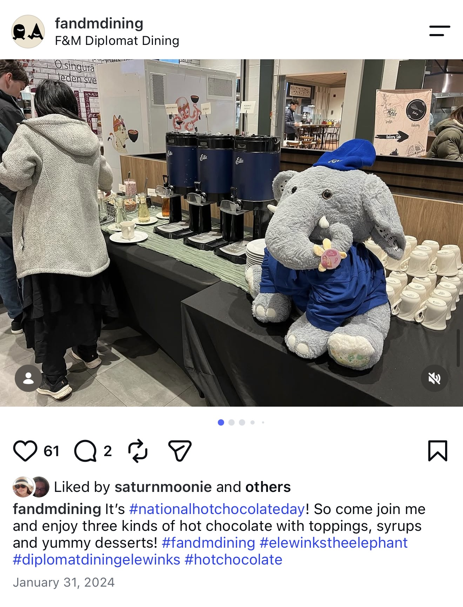
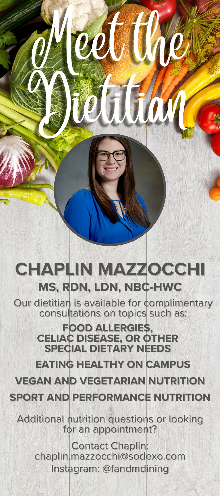
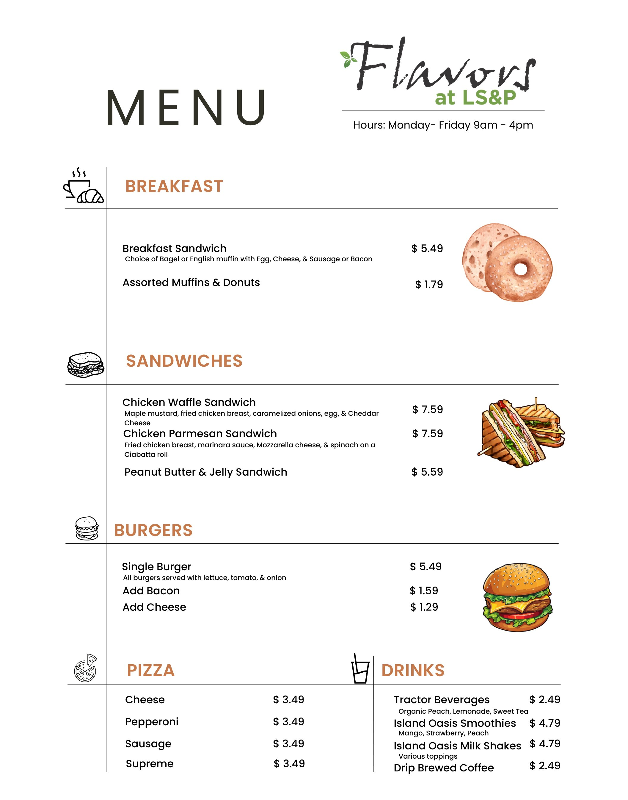
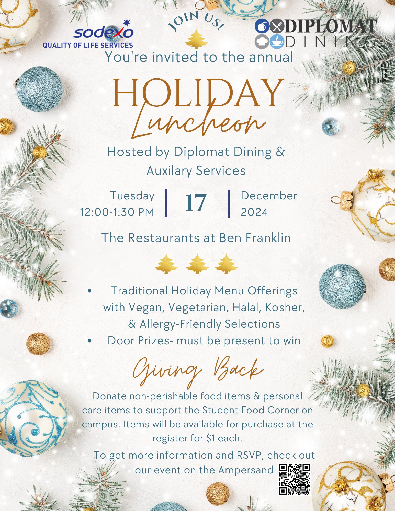

BRAND IDENTITY
Visual Identity
Created a recognizable cafe identity designed to work across menus, loyalty materials, signage, and promotional campaigns.
INTEGRATED MARKETING · BRAND · EXPERIENTIAL · SOCIAL
Building campaigns students could see, experience, and participate in.
A portfolio of marketing work spanning brand development, loyalty strategy, social engagement, experiential campaigns, community partnerships, wellness communications, and revenue-focused promotions at Franklin & Marshall College.




OVERVIEW
At Franklin & Marshall College, my role extended well beyond traditional dining operations. I led and supported marketing initiatives that connected student engagement, brand development, experiential programming, social media, and business performance.
I developed campaigns from concept through execution—creating promotional strategy, content, visual assets, on-campus activations, and audience engagement mechanics while collaborating across dining, culinary, campus partners, and student-facing programs.
The result was a body of work spanning brand-building, loyalty programs, community partnerships, experiential marketing, wellness communications, and revenue-focused promotions.
MY ROLE
Campaign concepts, audience engagement, event marketing, promotional strategy, and brand development.
Social media content, posters, menus, signage, campaign collateral, brand identity, and visual storytelling.
Campus activations, cross-functional coordination, promotional rollouts, student participation, and operational implementation.
Instagram, social stories, digital content, print collateral, door flyers, dining-location signage, and in-person experiences.
01 · CAUSE MARKETING
Create a high-visibility campus activation that encouraged student participation while supporting food accessibility initiatives on campus.
Partner with the Student Food Corner and turn a traditional donation drive into an interactive experience centered around a dunk tank event.
The campaign was promoted through social media and physical door flyers to connect digital awareness with on-campus participation.
Food and essential-care items collected for the Student Food Corner through this single activation.


02 · BRAND ENGAGEMENT
Create a recognizable personality for Diplomat Dining that students could interact with across both social media and the physical campus experience.
Instead of choosing a mascot internally, I developed a participatory campaign that invited students to help build the brand.
Students first voted on the type of mascot. After the elephant was selected, they submitted name ideas and participated in another round of voting to select the final name: Ele Winks.
Invite students to choose the mascot.
Use social polling to select the elephant.
Collect community-generated name ideas.
Introduce Ele Winks to the campus community.
Use the mascot in ongoing events and campaigns.


Original Instagram Story voting screens are no longer available. Surviving feed posts document the voting, naming, reveal, and ongoing activation strategy.
03 · BRAND & LOYALTY
Strengthen the identity of The Diplomatic Cafe while creating reasons for customers to return, engage with the brand, and increase repeat purchasing.
Developed branded promotional programs that extended the cafe identity across visual assets, loyalty incentives, physical collateral, and recurring customer offers.
These initiatives included coffee and sandwich punch cards, branded cafe materials, and the Dip Sip Campus Coffee Club.

BRAND IDENTITY
Created a recognizable cafe identity designed to work across menus, loyalty materials, signage, and promotional campaigns.

CUSTOMER RETENTION
Developed a repeat-purchase incentive that rewarded customers after eight qualifying beverage purchases.

LOYALTY MARKETING
Extended the loyalty strategy beyond beverages with a food-focused repeat-purchase program.
MEMBERSHIP · RETENTION
Promoted a paid coffee membership offering unlimited drip coffee and tea plus a specialty-drink discount, creating both recurring engagement and upsell potential.
04 · EXPERIENTIAL MARKETING
Beyond traditional menu promotion, I developed event-driven campaigns designed to create reasons for students to interact with dining beyond the meal itself.

COMPETITION · SOCIAL ENGAGEMENT
Created an interactive culinary competition that invited students to compare dishes from campus dining concepts and vote for their favorite.
The campaign connected physical dining participation with digital engagement through Instagram Story voting and on-site participation.
EVENT MARKETING · STUDENT ENGAGEMENT
Promoted and supported a late-night campus dining activation combining social promotion, culinary preparation, event setup, and on-site student engagement.
CONTENT · STORYTELLING · EXPERIENCE
Developed educational storytelling around historical foods and paired it with an immersive dining experience, connecting research, content, visual merchandising, and culinary execution.

SOCIAL · SEASONAL · CAMPUS ACTIVATION
Used food holidays, seasonal moments, campus partnerships, and interactive experiences to create recurring opportunities for student engagement.
05 · CONTENT & COMMUNICATIONS
Not every marketing challenge required a large event. Some required turning detailed information into content students could quickly understand, engage with, and use.
I developed educational campaigns, service promotions, menus, event communications, and other customer-facing materials designed to balance brand personality with clarity and practical information.

WELLNESS · CONTENT MARKETING
Developed student-facing nutrition content that combined product discovery with practical wellness education.
The campaign promoted featured snack products and dietitian sampling while also explaining the benefits of balanced snacking.

SERVICE MARKETING · WELLNESS
Created approachable service marketing to increase awareness of complimentary campus nutrition support, including dietary needs, healthy eating, and performance nutrition.

INFORMATION DESIGN · CUSTOMER EXPERIENCE
Designed functional customer-facing materials requiring clear information hierarchy, pricing, product categories, readability, and brand consistency.

EVENT COMMUNICATIONS · COMMUNITY
Created event marketing that combined dining information, inclusive menu messaging, community-giving initiatives, and a clear RSVP call to action.
PROCESS
Identify opportunities based on student interests, campus culture, dining priorities, and seasonal moments.
Build the concept, messaging, engagement mechanic, and promotional strategy.
Develop social media content, promotional graphics, signage, menus, and campaign collateral.
Connect social media with physical campus promotion and in-location communications.
Coordinate with culinary teams, operations, campus partners, and students to bring the campaign to life.
Evaluate campaign-specific outcomes including engagement, participation, donations, revenue, or event performance.